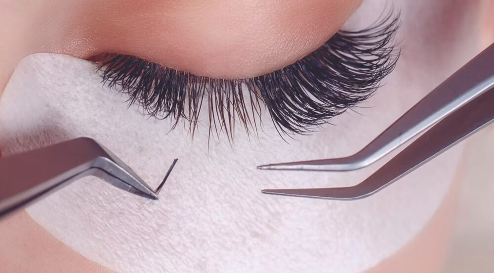

O que é extensão de cílios?
A extensão de cílios é a aplicação de fios sintéticos, de seda ou de outros materiais sobre os cílios naturais, alongando e dando volume ao olhar. O resultado é um efeito de cílios longos e definidos, sem necessidade de máscara de cílios no dia a dia. Feita fio a fio, com cola específica e técnica de isolamento, é um procedimento delicado que exige mãos treinadas.
Qual a diferença entre fio a fio, volume brasileiro e volume russo?
Essa é a dúvida mais comum de quem quer fazer ou aprender. Cada técnica entrega um efeito diferente:
- Fio a fio (clássico): um cílio de extensão sobre cada cílio natural. Efeito natural, discreto, ideal para quem quer realçar sem exagero;
- Volume brasileiro: pequenos leques em formato de Y, com fios ultrafinos, aplicados por cílio natural. Volume marcante, mas ainda natural — é a técnica mais pedida do momento;
- Volume russo: leques com mais fios (3D, 4D ou mais), criando um efeito denso, cheio e dramático, para quem ama um olhar poderoso.

Quanto tempo dura a extensão de cílios?
A extensão acompanha o ciclo natural de crescimento e queda dos cílios, que dura em média de 3 a 4 semanas. Como cada cílio natural cai no seu tempo, o ideal é fazer manutenção a cada 2 a 3 semanas, repondo os fios que caíram e mantendo o visual sempre cheio. Com bons cuidados, o resultado se mantém bonito por muito mais tempo.
Quer o olhar impecável agora?
Extensão de cílios no Tatuapé · Avaliação GRÁTIS pelo WhatsApp
Agendar meus cíliosA extensão de cílios estraga o cílio natural?
Feita corretamente, não. O segredo está na qualificação do profissional: usar fios com espessura e peso adequados ao seu cílio natural, aplicar com boa técnica de isolamento (um fio por vez) e respeitar o ciclo natural. Quando esses cuidados são seguidos, os cílios naturais permanecem saudáveis. Problemas surgem quando a aplicação é feita sem técnica, com fios pesados demais — mais um motivo para escolher (ou se tornar) um profissional bem formado.
Como cuidar da extensão de cílios para durar mais
Alguns cuidados simples prolongam bastante a durabilidade:
- Evite esfregar ou coçar os olhos;
- Não use produtos oleosos ou demaquilantes com óleo na região;
- Higienize os cílios regularmente com shampoo próprio para extensão;
- Seque com cuidado, sem friccionar;
- Evite calor intenso direto (forno, sauna muito quente) nos primeiros dias.
Vale a pena aprender extensão de cílios?
Se você pensa em trabalhar com beleza, a resposta costuma ser sim. A extensão de cílios tem alta demanda e gera renda recorrente — a cliente volta a cada manutenção. Com poucas clientes por semana, o investimento em um bom curso tende a se pagar rápido, e você pode trabalhar por conta própria, definindo sua agenda. O que faz a diferença é uma formação de qualidade, com prática real.
Quer transformar isso em profissão?
Curso presencial de Extensão de Cílios no Tatuapé · Certificado · Turmas reduzidas
Conhecer o Curso de CíliosOnde fazer ou aprender extensão de cílios no Tatuapé?
O Bella Beauty Club, no Tatuapé (Edifício Platina, a 5 minutos do Metrô Tatuapé), oferece tanto a aplicação de extensão de cílios quanto o curso profissional de formação. Com nota 5,0 no Google, manobrista e café premium no prédio, é referência em beleza na região. Seja para realçar seu olhar ou para aprender uma nova profissão, fale com a gente pelo WhatsApp.